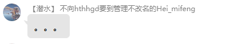
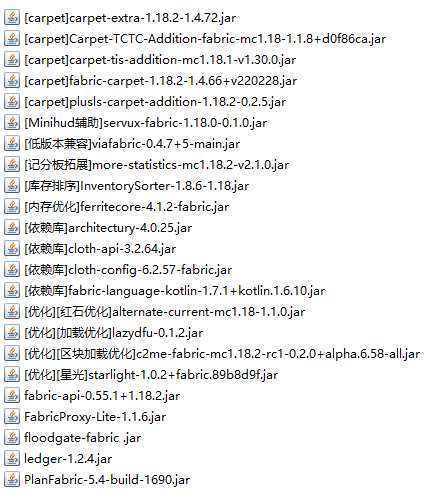
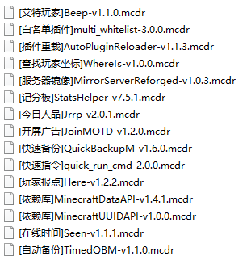

服务器公告和守则
服务器公告
服务器介绍
TSS全称: Twinkle Stardust Server TSS服务器于2022年6月12日成立,目前由腐竹 hthhgd 全权管理，管理员仅负责白名单,和部分事宜
服务器类型及信息
服务器使用正/盗版 混合登录 模式,且有 人工白名单 以及 死亡掉落 机制,请熟知.
服务器详细信息如下
服务端：Fabric
服务器类型：原版生电服务器
服务器是否开启正版验证：√
服务器是否开启白名单：√
服务器是否允许作弊：×
服务器主要模组：Carpet及其拓展
服务器允许使用Mod白名单：
1、AutoFish
2、“Masa全家桶”
3、Bedrock_Miner
4、Shulker_Dupe
5、Quick_Shulker
6、以及其他辅助类、优化类非作弊Mod
（如不清楚，请私信管理进行询问！！！）
服务器开放时间：如无特殊原因将全天开放
服务器版本说明
服务器会尽量采用 1.18.2 ,如无特别原因将不再更新服务器版本,因这有利于服务器机器的设计，而且这样不用考虑机器设计在下个版本是否有效；这也有利于服务器稳定性，以免因服务器跨版本升级导致存档出现的种种Bug。
插件
本服务器不安装任何玩法类插件，例如圈地，锁箱子等，住处的选取请提前做好宣告，否则按先来后到判定。
服务器仅会安装 mcdr 的一些辅助插件
服务器地毯已开启功能简略介绍
tweakeroo相关支持:
1.精确放置可以使用
2.灵活放置不会产生幽灵方块
3.可以使用空潜影盒堆叠
4.容器预览可以使用
游戏相关:
1.可以召唤假人
2.连续点三下潜行键可以坐下
3.闪电苦力怕炸死末影龙会掉落龙首
4.潜影贝打死幻翼会有几率掉落鞘翅
5.可以秒吸经验(经验吸收无冷却)
更详细内容或想了解服务器开启的详细功能请跳转至 服务器详细信息
- 1
服务器信息拓展写明了服务器的mod列表等信息.
服务器种子
服务器种子为 -6367689914077029021 ,服务器公布种子,请大家禁止无意义跑图,如需某群系或建筑结构请使用种子查询后再前往
种子来源是b站上的up主 SunnySlopes 发布的一个种子, 原视频 已说明了大部分群系/结构建筑的位置,无需重复查找
既然你已经看到这了,代表你已经大概了解了服务器的信息,我相信你也能看完剩下的信息
服务器ip:
java版ip: mc.hthhgd.xyz:10001 注:群文件里有服务器推荐包,整合了不少辅助模组,需要可以下载 使用自己的包也是可以进游戏的 基岩版ip: mc.hthhgd.xyz 端口: 19132 注:基岩版apk安装包在群文件里
服务器意见解答
1.可以弄一个一人睡觉，跳过夜晚的吗？
不可以,因为服务器设置50%玩家睡觉是比较合理的,因为这样有助于玩家间投票绝定是否跳
过夜晚,如果设置了一人睡觉跳过有可能有些机器将无法工作,比如鞘翅机,如果是因为一个
人想要白天睡了觉,导致机器不工作将会造成其他玩家的损失,然而50%玩家睡觉有助于玩家
间投票决定是否跳过夜晚,希望大家能理解.
服务器开服理念
本服务器严格遵守 “人品第一，技术其次” 的理念，致力打造一个和谐友善、开放包容、自由创造、与时俱进的服务器氛围，运维部会尽力为大家维持一个良好的环境。
腐竹的心里话
为保证原滋原味的游戏体验，本群服务器均未禁任何物品，各位生电玩家请仔细阅读以下条款，以确保服务器的正常运行：
1.纯净服允许高频红石机械，但 务必做好开关 ，防止误操作陷入死循环导致崩服；服务器是大家的心血，请做好万全准备再上线服务器使用。
2.村民交易所以及一些极具占用资源的生物机械，建议建造在 尽可能远的地方 ，有需要时再通过地狱交通过去激活使用。
3.如若建造大型红石机械，请向腐竹做好报备，并在自己的单人存档或镜像服测试通过后再实施建造。
4.纯净服已添加地毯端及TIS、Plus与TCTC的地毯扩展，建造的假人请自行规范管理，不用则请删除，避免造成不必要的占用。
Tips: 机械的建造请各位负责人做好 万全准备 ，不要因为一些操作导致全服卡顿、回档，从而导致各位玩家的心血流失。
重要提示：如果您不懂机器的造构，请不要乱动机器，使用机器务必做到人走机停，否则会造成不堪设想的后果。请不要因为您一个人的失误造成全体玩家的损失。 ( •̀ ω •́ )y
请各位玩家养成 良好的游玩习惯 ，比如补一下因为苦力怕爆炸而造成的坑，又或者是砍树不要砍一半，使用红石机器一定要 养成人走机停的好习惯 。
服务器的配置不算高，但也能满足大部分的游玩体验了；希望大家都把服务器当成自己的家，维护好整体的游戏环境。服务器也 不会装载反作弊插件 ，我相信各位玩家也不是贪这种小便宜的人，至于素质问题也没有必要强调太多，大家都是 快成为成年人或已经成年的人 了，我就不再提这些低级的问题了。服务器会在假期和周末开放，大家可以放心在这安家，尽管生活才是人生的重点，但是希望各位玩家在某一天闲下来的时候，还记得自己在TSS还有个家，到时务必回家看看风景，看看自己曾经肝过的世界。
虽然手册里有很多重复的内容,虽然很废话,但我更希望大家能够引起重视。
服务器守则
想永久拥有白名单您务必遵守的守则
作弊
本服务器禁止一切不定项刷物品的行为，禁止矿透，禁止任何形式的作弊行为，违者永Ban。
类似潜影盒复制、羊驼复制以及一些作弊端的使用，本服是严令禁止的。如有发现即永Ban，对于
知晓玩家作弊却不上报的玩家，同样执行永Ban处理。
类似“杀戮光环”、飞行等严重破坏游戏体验的行为，本服是严令禁止的。如有发现即永Ban，对于
知晓玩家作弊却不上报的玩家，同样执行永Ban处理。
类似矿透材质，矿物追踪以及一些不正当行为，本服是严令禁止的。如有发现即永Ban，对于知晓
玩家作弊却不上报的玩家，同样执行永Ban处理。
PVP
本服务器禁止一切未经授权或未经过协商的PVP活动。
某些手贱的玩家请注意你的游戏习惯，打招呼请用友好的方式，禁止在任何机器旁发生冲突，违者
主要责任人永ban处理，次要责任人封禁七天。被处罚了别和我说什么我在开玩笑，我没有心情和
你开这种玩笑。
禁止色色
禁止在游戏/群里散播色情网站、书刊等信息。
禁止诱导他人接触色情内容
- 禁止散播伪色情内容
禁止在游戏内使用生物以及方块作为道具诱惑、诱导他人学习/观看色色内容
如有举报,腐竹将会去清理违规建筑,造成的损失自负
以下是对此条规则的个人解释
本人比较反感别人在游戏里造色色的东西,特别是做好之后还还叫我去看,我之前玩的服务器 如果有人诱导别人去看色色的东西然后被骂了半个小时,所以希望大家引以为戒,并不是每个 人都喜欢而且能接受这些东西的,如果你非要搞那请你们私下交流,但别胡乱叫人去看,不要 让我听到有人举报也不要让我看见就行,我看见一个清一个,损失自负.
反面教材:
【言行举止】
优美的话语能使人身心愉悦,良好的行为能促进友谊,有一个高尚的品德能获得别人的青睐,这比优秀的游戏技术更重要.
良好的行为
行为决定一个人的品质.
请各位玩家 务必深刻理解 此条规则!
违者一律永Ban.
1、不得随意践踏他人的劳动成果。
Baitang和ay_xiaomo在建造红石机器时，
SSJ 去按了一个按钮、踩了一个踏板、拉下了一个拉杆、
偷了一个红石块、按了一下音符盒、触发了一次方块更新.....[🈲]
2、不得盗取或摧毁他人物品，恶意攻击或互相伤害玩家。
如以下错误示例：
TheColdWinter正在挖区块，
SSJ 去打了他一下，用岩浆烫了他一下，用剑砍了他一下，
并对其基地进行轰炸.....[🈲]
3、不得对他人进行言语或其他形式的攻击。
如以下错误示例：
Shanquan看了机器的Readme但仍不会使用此机器，
SSJ 说：你**是不是傻，你这都不会用，
起开起开，啥也不是.....[🈲]
4、不得恶意爆破服务器！
如以下错误示例：
Sikete'er正在摸小黄鱼，
SSJ 看到后，恶疾发作，一怒之下，使用tnt复制机器，
对服务器进行恶意轰炸.....[🈲]
5、不得无意义跑图或以获取资源为目的的跑图。
如以下错误示例：
Muhuo和༺硕༻正在闲逛，
SSJ 说：我们去跑图吧，“探索一下”，运维部天天发这发那，
限制我们，走，我们去卡死服务器.....[🈲]
6、不得诱导其他玩家做出以上行为。
如以下错误示例：
基基正在专心致志地摸鱼(bushi，
SSJ 与他说：你看看TSS的腐竹，一天天啥也不干，
还放我们鸽子，天天咕咕咕，还没人来服务器，
我们去把服务器炸了吧/我们去管理居所偷点东西/
我们把管理员以硅胶假人的形式召唤出来玩玩吧(bushi/
我们去创造大量的无意义掉落物去卡服吧.....[🈲]
聊天准则
1、不允许发布任何含广告性质内容。（如:推广，邀请扫码，推荐链接等）
2、不允许发送任何含敏感程序的文件。（如:含有病毒的文件等）
科普一下：
文件包括图片、视频、程序、压缩包等
3、不允许发送过多敏感字符。（如:过激语言，不当口头语句等）
4、不要发布谣言，不要带节奏。（如:关于当季热点，非官方发布的新闻、文章等[例如关于 COVID-19 的新闻文章]）
5、聊天时，一定不要触犯法律！（请您务必做到：法无授权不可为，法定职责必须为）
6、禁止一切脏话，宣泄负能量，玩网络烂梗，口嗨等行为，违者第一次警告、第二次禁言并移除白名单3天，第三次永Ban并驱逐出群。
“脏话每个人都可能会说，但请各位点到即止；宣泄负能量也一样，每个人生活中都可能会有不顺
心的事，但是游戏交流群是给你带来快乐的地方，并不是给你宣泄情绪的地方，情绪是拥有感染力
的，你可以寻求其他方式来宣泄你的不满，但请不要因为你的情绪而影响其他玩家。对于网络烂梗
这个因素，每个人有着不同的理解，有些时候玩梗会升华气氛，但有些时候却很令人下头，请各位
玩家谨慎玩梗，都是懂事的人了，希望各位在发言之前带上脑袋。口嗨一时爽，事后火葬场，适当
的口嗨是可以活跃气氛，但是过分了就会引起他人的反感，为了各位玩家的游戏体验，请自觉。”
7.禁止对他人进行 语言攻击或威胁 ,违者禁言/ban.

反面教材:
服务器游戏守则
服务器机器/建筑要求
红石生产机械
- 本服务器保证原滋原味的游戏体验，未封禁任何物品，允许高频红石，但请遵守以下规范，否则腐竹有权清除你的一切作品。
服务器内所有中大型红石机器的建设均需 向腐竹申请并对服务器玩家公示 ，同时在在线文档上报建造地点、负责人、占用情况、效率数据，腐竹有权清除一切未归档机器。
服务器内所有红石机器均需设置开关以及使用说明，所有使用机器的玩家必须做到人走机停，如因自身的操作失误导致服务器卡顿，后果自负。
服务器内 所有召唤的假人均需在名字说明用途， 未说明用途的假人将被手动清除，清除导致的机器损坏由玩家自行承担。
服务器内所有产出型机器请 务必做好收集， 避免实体堆积问题；腐竹有权清除任何低效率机器以及有严重设计缺陷的机器。
请勿重复造轮子！
工业区外小型机器可建设清单(未在清单内机器请咨询腐竹)。
- 服务器机器规模定义规范
小型（私人）机器——产量或功能刚刚满足自身需要。不可对服务器性能有影响，随开随关，不可假人挂机
中大型（公共）机器——产量或功能满足聚落或全服需求，对服务器性能影响在不可感知范围内。需要有完善的存储、销毁和简易说明，可在服务器活跃时间段开机，允许假人挂机。
重型（公共）机器——产量或功能满足全服需求，对服务器影响尽量在3mspt内。需要有完善的使用指引、交通、打包仓储和销毁，不建议在服务器活跃时间段开机，建议假人半夜挂机。
- 红石特种机械
服务器大型专用设备高MSPT设备建设需在 建设前 对管理员申报并进行全服公示。使用设备需按各自使用说明进行。
对于 不申报 导致服务器其他玩家损失，将对该玩家进行5天Ban的惩罚。
建筑
本服务器所有中大型公共建筑均需归档处理。
服务器提倡各种小中大型公共观赏/实用建筑的建设，但请各位作者严格遵循归档规则，即在在线
文档中说明地点，作者，完工日期；如果七天内一个建筑项目无任何进展或是微小进展，即视为烂
尾建筑，腐竹将不定期清理烂尾建筑以保证服务器地图环境整洁。
邀请
- 关于服务器成员邀请机制：
服务器玩家可自行邀请其他玩家进入群聊以及服务器，但请注意，若被邀请的玩家发生违规行为，邀请人将负连带责任。
基础游玩习惯
服务器内的地图环境也在游戏环境的范畴以内，请各位玩家养成良好的游戏习惯，例如补苦力怕的
坑，砍完整一棵树，规划好自己的领地，我不希望看到一个乱七八糟的服务器。红石机器人走机
停，请不要做一个没头没尾的玩家。对于乱七八糟的地块，腐竹有权进行还原处理。如非必要，请
不要进行大规模跑图操作；禁止无意义跑图行为。何为必要?寻找特定群系，结构，以及某些稀有
资源，例如附魔金苹果以及海绵。
玩家须知
服务器封禁规则
服务器处罚
如违反服务器公告与须知中任意一点，第一次将 予以警告 ，第二次将封禁白名单 1 天 ，第三次将封禁白名单 1 星期 ，第四次将被 永久封禁 。
聊天处罚
如违反群内聊天守则中任意一点，第一次将 予以警告 ，第二次将被禁言 1 小时 ，第三次将被禁言 1 天 ，再次出现此现象将会被禁言 1 星期 。
本服务器活跃机制及被清理玩家回群说明
在放假季(即1,2,7,8月)，连续21天未登录的玩家将在第22天清除出群。
在淡季(即除1,2,7,8月外的所有月)，连续30天未登录的玩家将在第31天被清除出群。
所有由于 活跃违规 被清理出群玩家3天内(从被清理出去的时间开始计算)无法申请返回本服务器，3天后可向审核群提交回服申请。
对于即将 中考/高考 即初三以及高三的玩家们，请 私聊腐竹 进行记录，记录后将不按上述规则实行，此类玩家需在 中/高考结束后的七天内登录服务器， 未登录的玩家视为弃坑，将会被清理出群。
若有特殊事宜，请私聊腐竹进行说明，否则一律按照以上规则执行。
后记: 如果您觉得此手册中哪部分规则或教程不妥，欢迎各位向群内群主或管理反应！
服务器附加信息
不想了解的玩家可直接点击下面的 跳过 !!
不想了解的玩家快速跳过请点击⇢ 跳过
服务器详细信息
服务器mod列表
服务器mcdr插件列表
群管理申请规则
咕咕咕,下次更新